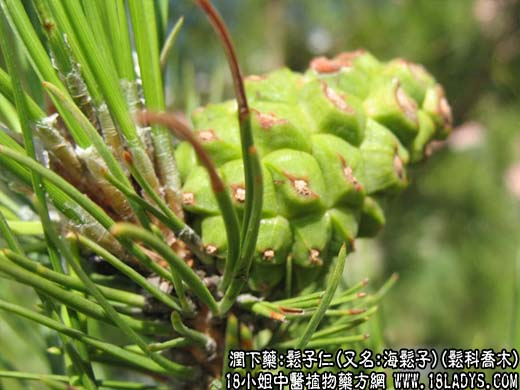

【中药概述】
松子仁(又名:海松子)为松科乔木植物马尾松、红松等的成熟种子。甘、温。归肺、大肠、肝经。
1．润肺止咳：用于肺燥咳嗽等症，可配伍润肺止咳药等同用。
2．润肠通便：用于肠燥便秘等症，有润肠通便的功效。可单用，或入剂服用。
【临证应用】
便秘（柏子仁，松子仁，火麻仁为末，饭后蜂蜜水送服）。
【营养成分】
松子主含脂肪油（油酸酯、亚油酸酯）74％，蛋白质，挥发油，钙、磷、铁等。
【用量用法】
5——12g，打碎入煎剂，或入丸剂。
【使用注意】
便溏精滑，有湿痰者不宜。